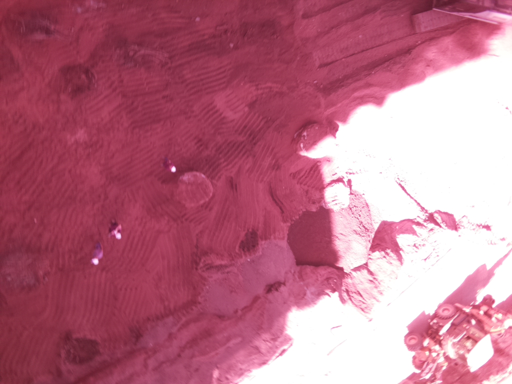

Durante, el proyecto hemos realizado muchos tipos de pruebas, ya sea con la estructura, paracaidas, sensores o el satélite completo.
Primeras pruebas del paracaidas
Las primeras pruebas que hicimos fueron con
el paracaidas terminado. Lo que hicimos fue
unirlo a la estructura externa del satélite
y lanzarlo desde la terraza del colegio a unos
12 metros del suelo.
De esta forma logramos encontrar una forma de
plegar el paracaidas para que se abriera
correctamente a la hora del descenso.
Unos días después, decidimos hacer lo mismo pero esta vez con el peso real con el que tendría que trabajar durante el descenso del lanzamiento, es decir, 240 gramos
(peso establecido por CONAE). Para hacerlo, utilizamos una bolsa con arena que fuimos pesando en el labortorio de química del colegio.
En estas pruebas, realizamos muchos más lanzamientos con todas formas diferentes de plegar el paracaidas hasta encontrar la que permitiera que el paracaidas se abriera
mejor y más rápido:
También hicimos más lanzamientos para las entregas del certamen a medidas que fuimos agregando sensores al satélite y de esa forma comprobamos que el satélite
seguía enviando datos a pesar del impacto
Pruebas en la peatonal
Para comprobar que el satélite enviara datos a larga distancia, mientras programábamos la misión primaria hicimos pruebas en la peatonal.
Giuliana fue con los sensores hasta la esquina de Duarte Quirós y Av. Vélez Sarsfield mientras Ivo se quedó en el bar Monserrat ubicado frente
a nuestro colegio. Estaban a más de una cuadra de distancia y aún así, en ningún momento Ivo dejó de recibir datos. Eso comprobaba que la
telemetría estaba funcionando correctamente a una larga distancia.
Pruebas del mosquetón
Cuando le pusimos el mosquetón al paracaidas, decidimos hacer una prueba para ver si evitaba que los hilos se enredaran, así que lo pusimos frente a un ventilador:
Pruebas en Pocito
Acercándonos al final del proyecto, quisimos realizar pruebas integrales del satélite. Nuestro profe Matías Leuci consiguió que pudieramos ir a la obra de Pocito
donde podríamos lanzar el satélite desde 50 metros de altura, de forma que triplicamos la altura desde la cual lo habíamos lanzado en el colegio.
Como había mucho sol, Ivo tuvo que taparse para ver si recibíamos datos y no pudo ver el lanzamiento :(
Algunos videos de los lanzamientos:
La cámara pudo capturar varias fotos:

Pruebas en Aeródromo Coronel Olmedo
Ya casi finalizando el proyecto, nos surgió la oportunidad de lanzar nuestro satélite desde una avioneta a 200 metros de altura en el Aeródromo
Coronel Olmedo. Esto fue una gran oportunidad para testear la telemetría, el funcionamiento del paracaidas y la resistencia de la estructura;
aunque también fue la prueba más arriesgada que hicimos ya que la fecha era un día antes de la entrevista y podíamos correr el riesgo de que
algo se rompiera o perder todo nuestro trabajo, pero finalmente decidimos hacerlo porque confiábamos en nuestro trabajo.
Estas fueron las fotos que lofró capturar la cámara:
Pruebas de vacío y vibración
Luego de recibir la noticia de que lanzaríamos nuestro satélite en el predio de CONAE, decidimos hacer dos pruebas fundamentales que nos permitirían
verificar que el satélite enviara datos en cualquier momento del lanzamiento: pruebas de vacío y vibración.
Prueba de vacío: la realizamos en el colegio con una máquina de vacío que hay en el museo del mismo
Prueba de vibración: la realizamos en el colegio con un aparato del laboratorio de química y usamos una botella para que el satélite no se cayera
Pruebas de peso y medidas
A lo largo de todo el proyecto realizamos pruebas de medidas y peso del satélite porque debíamos cumplir con las condiciones de que midiera 7cm de ancho
y 15 de largo, y que pesara 240 gramos. Estas pruebas también debimos realizarlas el día de la entrevista.
Lo más complicado fue respetar el peso especificado ya que
requeríamos de muchos elementos y todo el tiempo teníamos
que sacar cosas para no pasarnos de los 240 gramos.
No hay fotos de cuando medimos el satélite par lo hicimos con
un calibre y en ningún momento tuvimos problemas con esta
parte ya que directamente diseñamos la estructura con las medidas
especificadas.